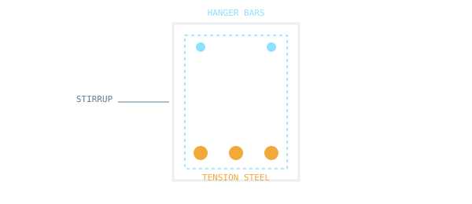

Working stress and limit state design of RCC beams, slabs, columns and footings.

Concrete Engineering and Technology — IIT Kanpur
Click an option to see the correct answer and a short explanation instantly.